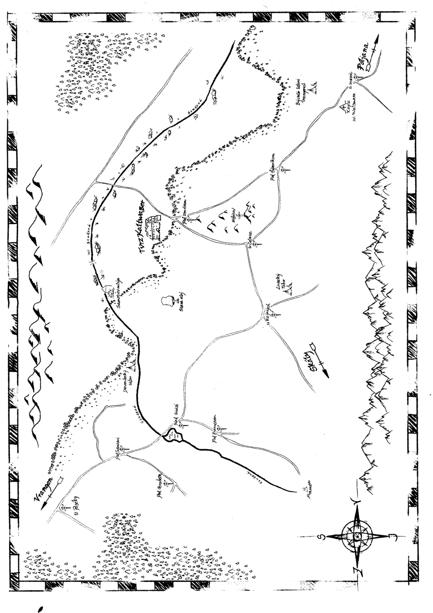

Je tomu již téměř dva roky, co pan Kaplický získal pro sebe kaltwasserské panství. Tehdy z toho byla na Poljaně velká sláva, alespoň mezi prostým lidem. Poháry cinkaly, faráři pořádali zvláštní mše ku příležitosti velkého vítězství a mapy se narychlo překreslovaly. Naopak panstvo z toho věru velkou radost nemělo. Většina Kaplického neměla ráda a získání kaltwasserského panství mu mezi nimi vysloužilo přezdívku „kupčík“. Vždyť jaký počestný poljanský šlechtic získá zemi koupí? To se nesluší. Ve Vrangenu se o ztrátě mnoho nevědělo. Pán z Ostromeče se to ostatně ani nesnažil příliš šířit, a proč by také měl. Sám sebe přesvědčil, že je vlastně rád. S tamním lidem i pány byla vždycky jen starost. Místo to bylo studené, nehostinné, kolovaly o něm podivné zvěsti a navíc z něj neproudilo téměř nic do jeho pokladnic. Když se pak loni rozkřiklo, že se na Kaltwasseru našla obrovská stříbrná žíla, situace byla rázem jiná. Prostý lid, i na Kaplického statcích, nad tím jen krčil rameny. Panského stříbra se nenají. Zato páni, ti se mohli vzteky udusit. Jak to mohl vědět? Nebo měl snad takové štěstí? Parchant jeden! A ve Vrangenu už tuto citelnou ztrátu nešlo ignorovat. Markraběcí agenti se museli rychle pustit do práce. Taková novinka by se mezi lidmi neměla šířit bez náležitého „doprovodu“. A tak se po hostincích dalo dozvědět lecacos: že historka o stříbru je poljanská propaganda, že je to sice pravda, ale stříbro je prokleté, a proto o něj nikdo nestojí, nebo že žádný Kaltwasser vlastně ani neexistuje. A pán z Ostromeče? Inu, ten přehodnotil svůj vztah ke svému bývalému lénu. Místo bylo sice stále studené, ale s takovým jménem, co by člověk čekal? A že se o něm nepovídá nic dobrého? Samé klepy a povídačky. A páni z Kaltwasseru? Těch už mnoho nezbylo, a levobočky nikdo nepočítá. Inu rozhodl se proto získat své panství zpět. A jak všichni víme, jeho pokus skončil neslavně. Panství nezískal a ke všemu se nechal zajmout panem Kaplickým. Tehdy už si markraběcí agenti netroufli vymyslet historku o tom, že pán z Ostromeče vlastně neexistuje, a i kdyby chtěli, nebude jim to nic platné, neboť novinky se rozletěly po celém markrabství jako splašené hejno vran. Situace byla taková, že si vlastně nikdo nepřál vojnu. Markraběti se pranic nelíbilo, že by zrovna teď měl znovu táhnout do války, protože se nějaký přihraniční šlechtic nechá zajmout. A velkokníže? Inu, ten krátce před Ostromečovým zajetím odešel na onen svět a tím pádem měli všichni mocipáni Poljany plné ruce s volbou jeho následníka. Mír sice trval, ale ti moudřejší na obou stranách hranice věděli, že je zle. Jeden diplomat se nechal slyšet, že mír mezi oběma zeměmi je jako krásná skleněná váza stojící na velmi vratkém stole, kolem kterého probíhá nezřízená pitka. Každý otřes, každé šťouchnutí, každá nešikovnost může tuhle vzácnou vázu shodit. A jak rok plynul, situace se spíše zhoršovala. Nikdo nevěděl co bude, a jak známo doba nejistoty je přece jen vhodná k urovnání starých sporů… nebo k naplnění vlastní pokladnice. Nebylo týdne, kdy by se na hranici něco nestalo. A protože válku nikdo nechtěl, pokusily se obě strany o dohodu. Nejprve si vymění zajatce jako projev dobré vůle a potom budou jednat o urovnání sporu. Zajatcem na straně Poljany je samozřejmě pan Jindřich z Ostromeče. Koho ale mají ve svých klepetech Vrangenci, to je mnohými propírané tajemství. Musí to být někdo, po kom Kaplický opravdu prahne, když se hodlá vzdát takového trumfu ve své ruce. A tak téměř na rok přesně od zajetí pana z Ostromeče míří na Kaltwasser dvě výpravy z obou stran hranice, aby se pokusili zachránit mír. Protože jak už jsme si řekli, je to mír skleněný a když se rozbije, bude z něj tisíc a jeden střep, o který se dříve či později pořeže každý v Pomezí.
Vyberte si frakci pro zobrazení jejího podrobného příběhu a záznamů:
Kliknutím na označené body zobrazíte podrobnosti o lokacích.
